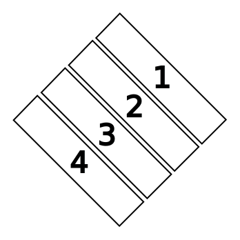
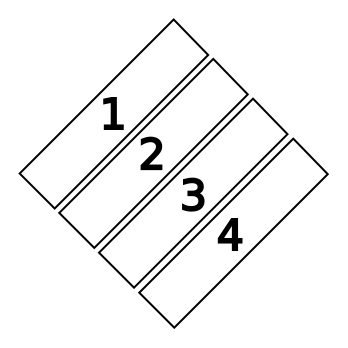
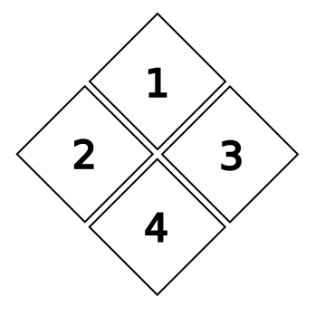
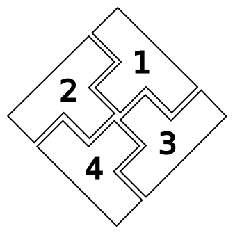
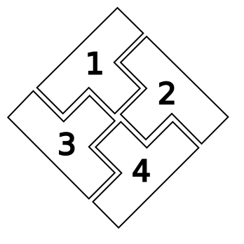

On the Subject of Simultaneous Simons
More bleeps and bloops than you can shake a stick at.
Note: For the purposes of this manual, a collection of four grouped colored buttons is a "Simon".
- This module is in fact four separate Simons. Four initial lights will be flashing, one for each Simon, corresponding to only one of the below five arrangements. Determine which one you are looking at, and make sure to note the ordering of Simons.





- Using the correct table below, find the color mapping for the first Simon. For each Simon past the first, add 1 to the strike count, eg: No Strikes for 1, 1 Strike for 2, 2 Strikes for 3, etc. If your number of strikes would be equal to or greater than 3, subtract 3 until it's below 3.
| Red Flash | Blue Flash | Green Flash | Yellow Flash | ||
|---|---|---|---|---|---|
| Button to press: | No Strikes | Blue | Red | Yellow | Green |
| 1 Strike | Yellow | Green | Blue | Red | |
| 2 Strikes | Green | Red | Yellow | Blue |
| Red Flash | Blue Flash | Green Flash | Yellow Flash | ||
|---|---|---|---|---|---|
| Button to press: | No Strikes | Blue | Red | Yellow | Green |
| 1 Strike | Yellow | Green | Blue | Red | |
| 2 Strikes | Green | Red | Yellow | Blue |
Note: Upon pressing any button the flashes will stop. Either memorize or note all the flashes for all Simons before pressing anything.
- Enter the sequence for each Simon on their respective colored buttons. This will cause each Simon to lengthen its sequence by one. Repeat the above steps, using your actual strike count for 1, until the module is complete.